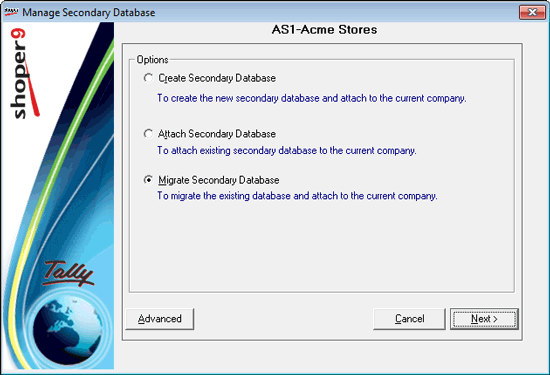
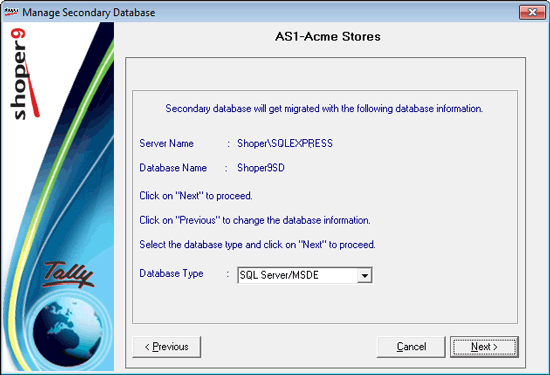
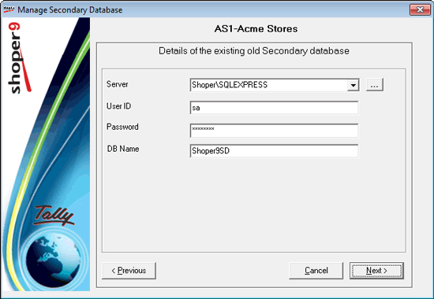
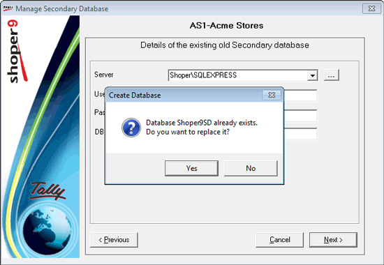
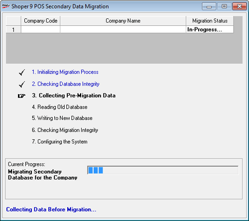
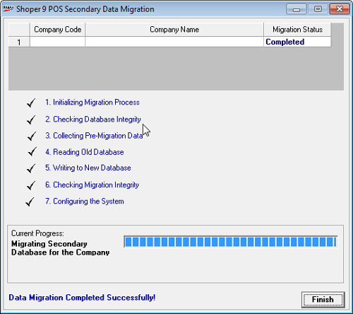
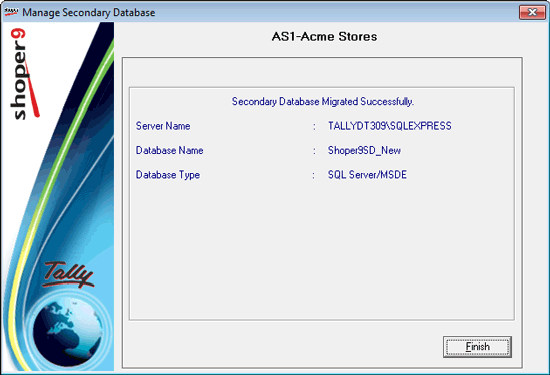

Select the option Migrate Secondary Database to proceed.

On clicking Next, the following window is displayed.

Database Type: Select the type of the database.
On clicking Next, the following window is displayed, where the details of the old database to be migrated are entered.

Server Name: Select the name of the server, where the secondary database is available.
User ID: Enter the user ID.
Password: Enter the password for the user.
Database Name: Enter the name of the secondary database to be migrated to the current company.
On clicking Next, a message box is displayed.

Yes: To replace the existing secondary database.
No: To disallow replacing the existing secondary database.
On clicking Yes, the secondary database migration starts.
The Shoper 9 Secondary Data Migration window with migration status is displayed.

On successful completion of the secondary data migration, the following window is displayed.

The Manage Secondary Database window with the database information is displayed.
